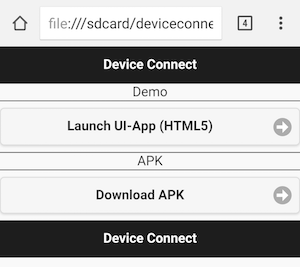
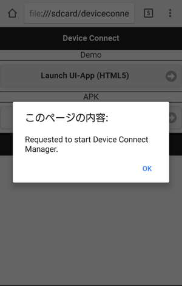
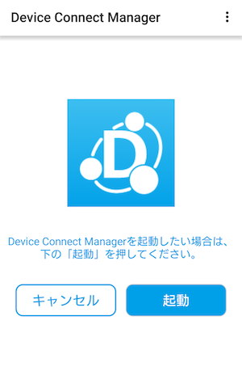
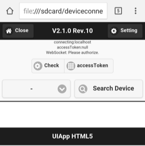
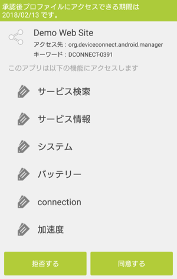
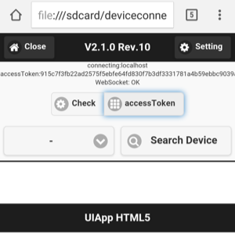
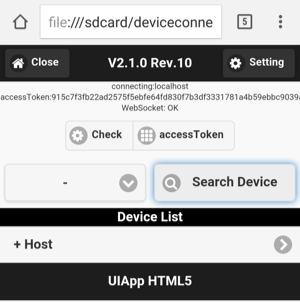
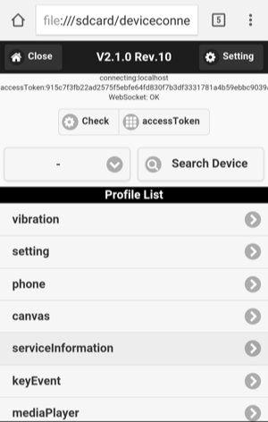
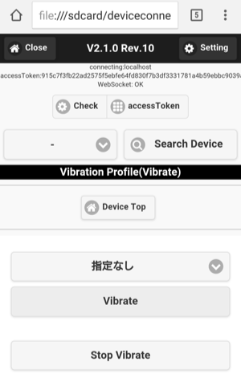

デモサイトの使い方
デモサイトはDeviceConnectのWeb APIを試せるKitchen Sinkになっています。実際には静的なHTMLです。
導入方法は2つあります。
ダウンロード
こちらのデモファイル をダウンロードして、解凍した内容をAndroidの内部ストレージにコピーします。
後はAndroidのChromeアプリでindex.htmlを開けばOKです。
Webからアクセス
こちらに同じものをアップロードしてあります。Androidのブラウザで http://deviceconnectusers.github.io/manager/を開いてください。
使い方
トップページ
トップページにアクセスしたら、まずは Launch UI-App をタップします。

Managerがオフの場合は、以下のようなダイアログが表示されますのでOKをタップしてください。

Device Connect Managerの起動画面が表示されますので、LAUNCHをタップしてください。 LAUNCHをタップすると、Managerがバックグラウンドで起動し、次のページへ移ります。

次のページが表示されるときにdemoWebSite(Webページ)のアクセスを許可するダイアログが出ます。

アクセスを許可するためのダイアログが出ますので、同意するをタップしてください。

そうするとアクセストークンが表示されます。WebSocketもOKの状態であればイベントを受診することができます。

もし、WebSocketがCloseの場合は、もう一度アクセストークンを取得するか、ページを再読み込みしてください。これで準備完了です。
デバイスリストの取得
次に操作するデバイスを検索します。Search Devicesをタップします。そうすると下にあるリストが更新され、利用できるデバイスが一覧されます。

その中のデバイスをタップすると、利用できる機能が一覧されます。

例えばこれはバイブレーションAPIを実行しようとしているところです。

このようにデモサイトを使えばDeviceConnectでできる機能が一通り試せるようになっています。JavaScript SDKも組み込まれていますので、その実装方法の参考にもなりそうです。